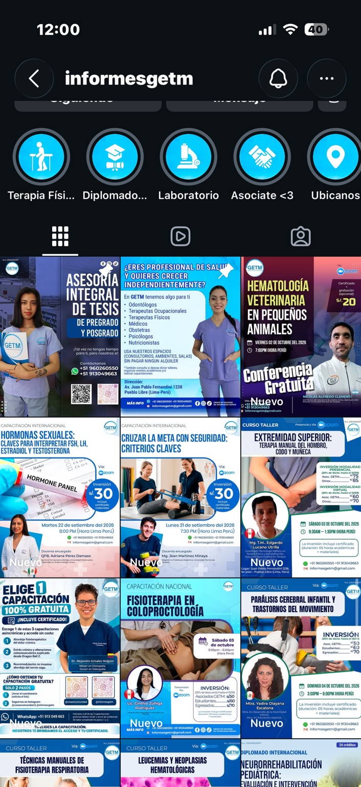
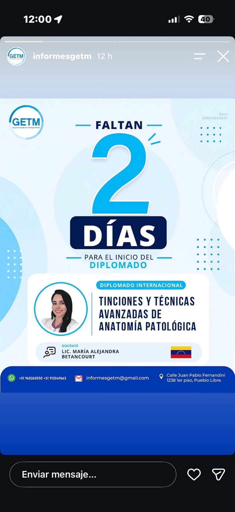
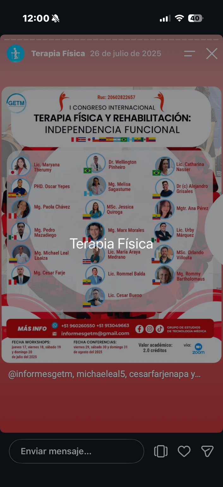
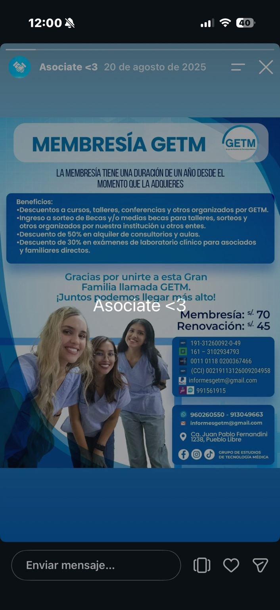

Cursos y talleres
Capacitación práctica y actualización profesional en distintas áreas de salud.
Organizamos, implementamos y desarrollamos cursos, talleres, diplomados, seminarios, congresos y eventos académicos especializados.

GETM desarrolla experiencias de formación para estudiantes y profesionales de las ciencias de la salud, integrando capacitación especializada, docentes y actividades académicas nacionales e internacionales.
Capacitación práctica y actualización profesional en distintas áreas de salud.
Programas de formación especializada con participación nacional e internacional.
Encuentros académicos, seminarios, paneles y conferencias especializadas.
Acompañamiento integral para trabajos de pregrado y posgrado.
Consultorios, ambientes, salas y espacios para profesionales independientes.
Servicios y beneficios especiales disponibles para la comunidad GETM.


Forma parte de nuestra comunidad y accede a beneficios en cursos, talleres, conferencias y servicios.

Solicita información sobre cursos, diplomados, membresía o servicios GETM.
WhatsApp
+51 960 260 550 · +51 913 049 663
Correo
informesgetm@gmail.com
Ubicación
Juan Pablo Fernandini 1238, Pueblo Libre, Lima – Perú